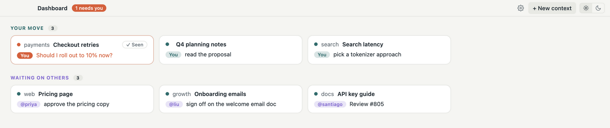
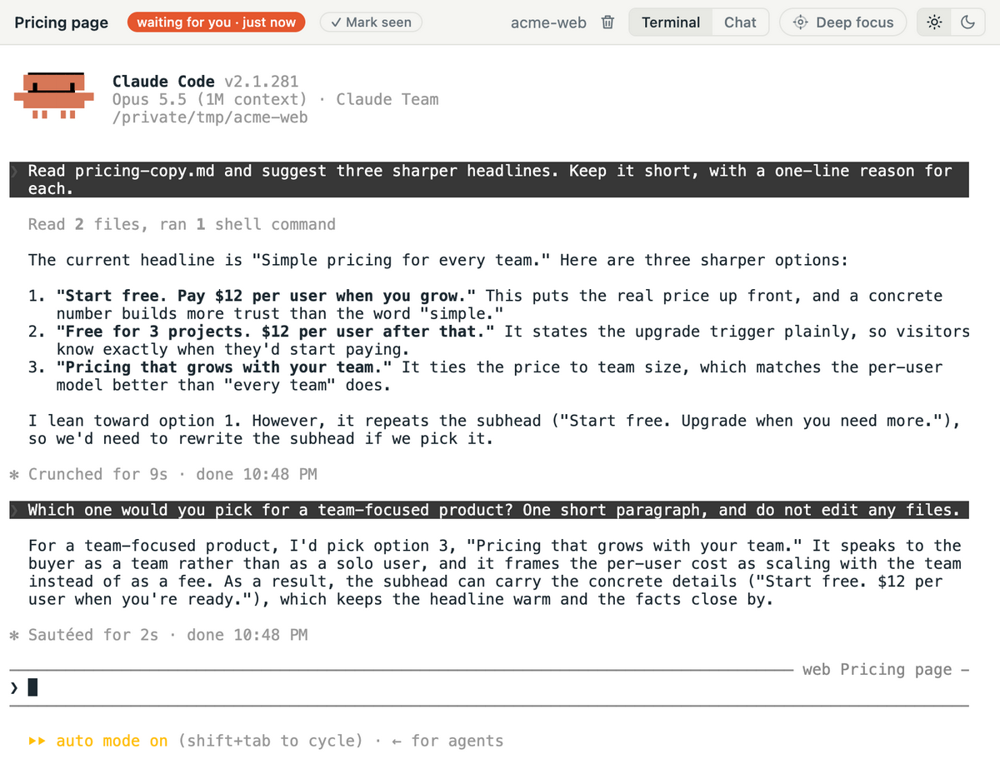
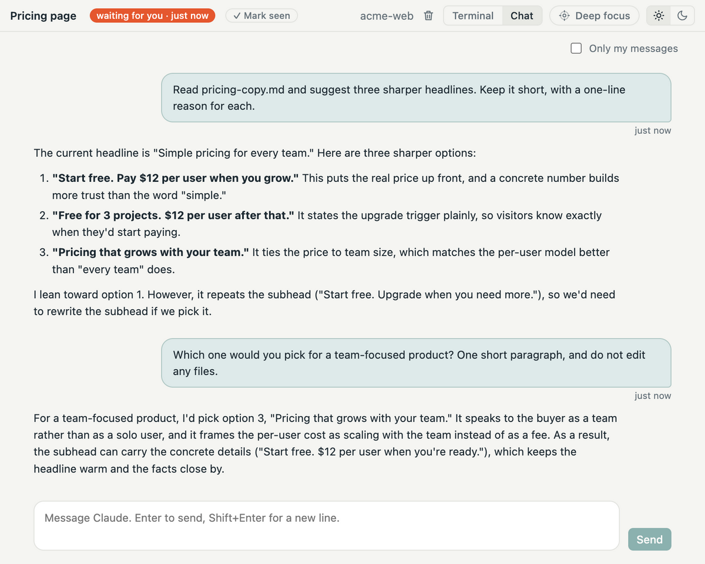
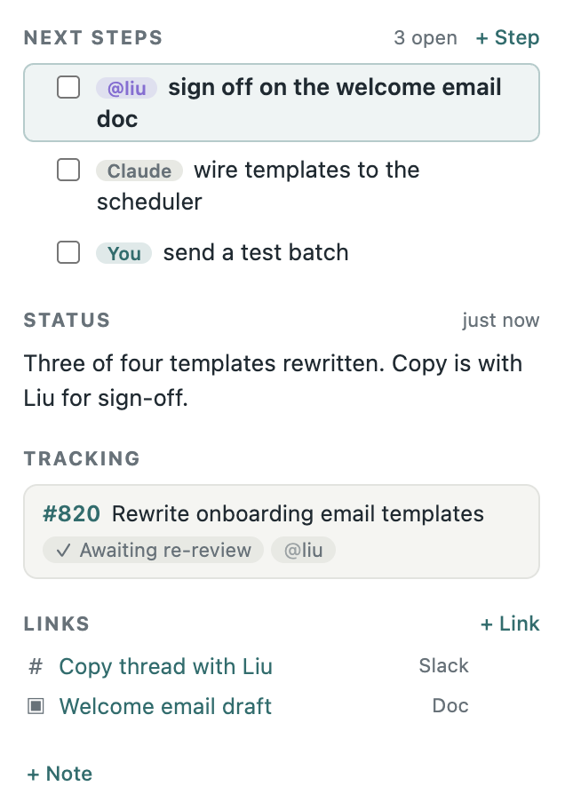
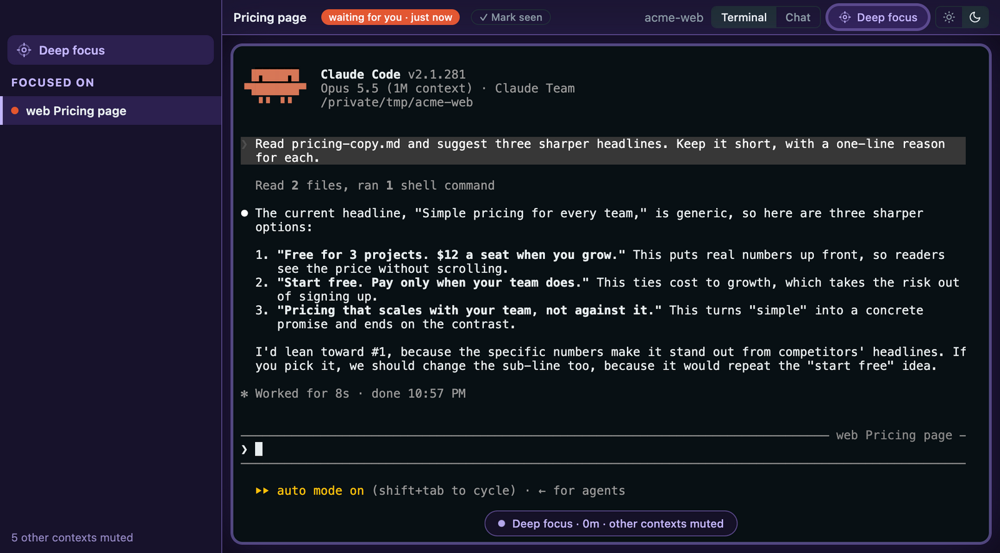

See everything at once
No more tracking multiple browser tabs.
A calm Mac home for your Claude Code work, with every session, PR, and link in one place. Perch stays quiet while you're in flow, and tells you when something needs you.

Already using Claude Code? Pick the sessions you want and Perch resumes each one exactly where it left off.
No more tracking multiple browser tabs.
You hear from Perch only when Claude, a reviewer, or CI is waiting on you.
Automatically detects linked PRs across repos and worktrees.
Quit or update Perch. Your Claude sessions keep running.


Chat with Claude, or switch to the real Claude Code terminal. Its status, next steps, PRs, links, and notes sit beside it.
Each piece of work keeps a short checklist, and every step has an owner: you, Claude, or a teammate. Claude writes a one-line status as it works, and each PR shows who you're waiting on.

Mute every other context and stay with one. Leave when you choose to.

Contexts, notes, and status live in a local database. No account, and nothing about your work leaves your Mac.
No analytics or usage tracking. Crash reports are off unless you turn them on, and never include your prompts, terminal output, or code.
Perch never reads, stores, or sends your API keys or sign-in tokens. They stay in your macOS Keychain or your own environment variables.
GitHub goes through your gh login, and Claude Code talks to Anthropic exactly as it does without Perch.
Sessions report to Perch over a local connection that never leaves your machine.
Every release is signed with an Apple Developer ID and checked by Apple’s notarization, including its malware scan.
GitHub and Claude are trademarks of their owners. Perch is an independent app, not affiliated with GitHub or Anthropic.
Requires the Claude Code CLI. The GitHub CLI is optional, for PR states.